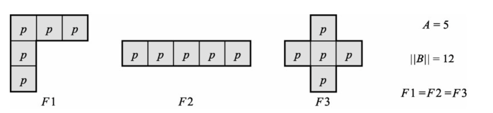
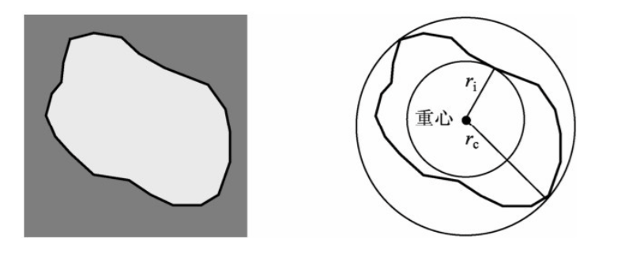
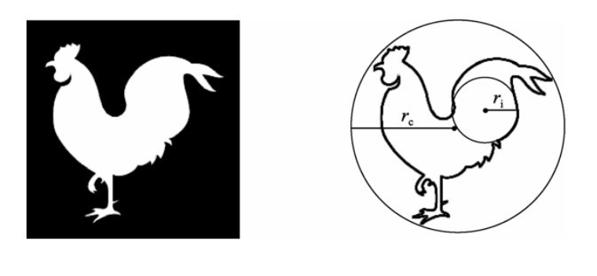
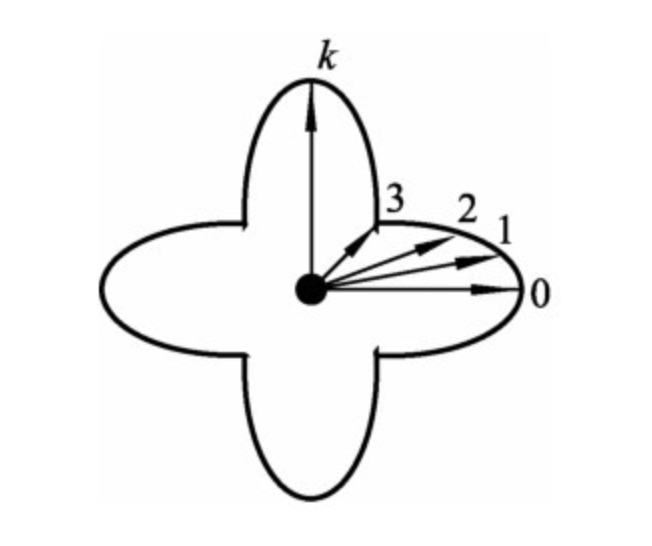
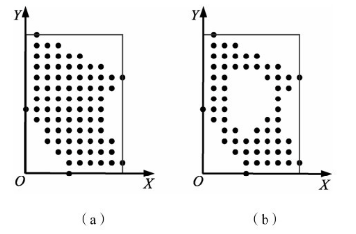
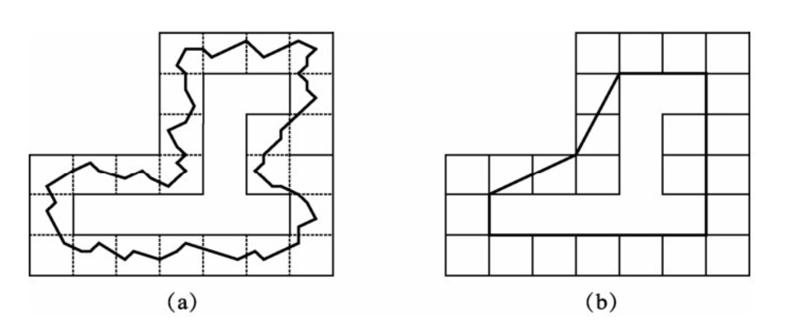
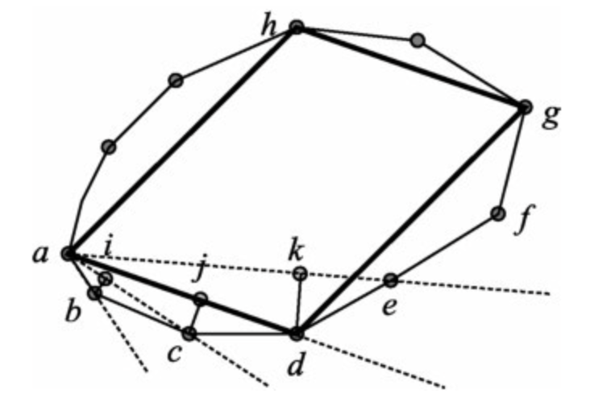
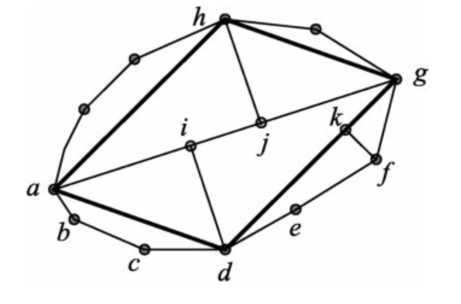
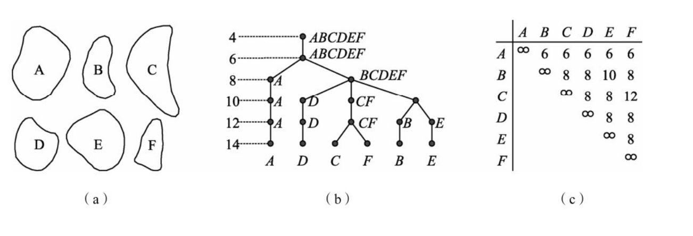
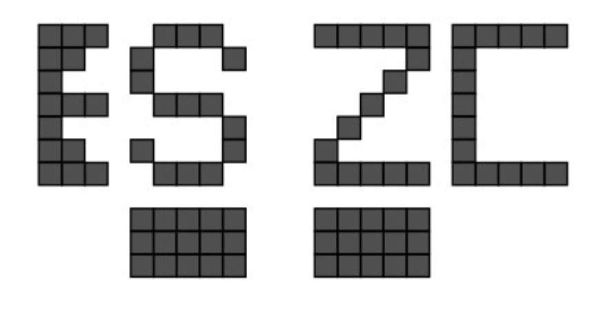

<div class="middle center"> <div style="width: 100%"> # 形状分析 <hr> 小组成员：王倓、马靓、徐龙腾、张荣辉、Rahana Najiur </div> </div> <!--v--> ## 概述 形状是一个看似简单却难以精确数学定义的概念。人们常通过比较或相对概念来描述形状，例如“像什么已知目标”，而很少使用绝对的定量描述符。 <div class="fragment"> 形状是从目标中过滤掉位置、尺度和旋转效果后剩余的几何信息，即对相似变换不变的性质。形状分析包含两方面工作：一是描述形状自身的特性，二是基于表达形式或目标特性，根据应用目的有效利用形状特征。由于缺少精确统一的定义，人们常用对形状变化敏感的参数来定量描述形状。 </div> <div class="fragment"> + 形状紧凑性描述符，外观比、形状因子、偏心率、球状性和圆形性。 </div> <div class="fragment"> + 描述形状复杂性的简单描述符，同时讨论兼顾紧凑性和复杂性的饱和度描述。 </div> <div class="fragment"> + 多边形逼近目标轮廓的表达方法，并讨论基于多边形表达进行形状分析的原理和方法。 </div> <!--s--> <div class="middle center"> <div style="width: 100%"> # 形状紧凑型描述符 </div> </div> <!--v--> ## 外观比和形状因子 **外观比**$R$常用来描述塑性形变之后目标的细长程度，定义为$R=\frac{L}{W}$。$L$和$W$分别是目标围盒的长和宽。 <div class="fragment"> **形状因子**$F$是根据区域边界$B$的周长$||B||$和区域面积$A$计算出，定义为$F=\frac{{||B||}^2}{4\pi A}$。由上式可见，一个连续区域为圆形时$F$为1，当区域为其他形状时$F$大于1，即$F$的值当区域为圆时达到最小。 </div> <div class="fragment"> 形状因子在一定程度上描述了区域的紧凑性，在一些情况下，仅靠形状因子$F$并不能把不同形状的区域区分开。例如图中的3个区域的周长和面积都相同，因而它们应该具有相同的形状因子值，但它们的形状是明显不同的。 <p></p> </div> <!--v--> ## 偏心率 偏心率$E$，也称伸长度，是描述区域紧凑性的一种度量指标。它反映了区域形状的拉伸程度——偏心率越大，说明区域越狭长。偏心率越小，说明区域越接近圆形，越紧凑。 <div class="fragment"> 1. **简单方法：**计算边界长轴（直径）长度与短轴长度的比值。这种方法简单直观，但受物体形状和噪声影响较大。 </div> <div class="fragment"> 2. **基于惯量的方法：**利用整个区域的所有像素，通过惯量椭球/惯量椭圆来计算，抗噪声能力更强。 </div> <div class="fragment"> 对于二维图像，主轴斜率$k$和$l$由以下公式确定 $$ \begin{aligned} k &= \frac{1}{2H}\big[(A-B) - \sqrt{(A-B)^2 + 4H^2} \big] \\\\ l &= \frac{1}{2H}\big[(A-B) + \sqrt{(A-B)^2 + 4H^2} \big] \end{aligned} $$ $A=\sum m_i(y_i^2+z_i^2), B=\sum m_i(z_i^2+x_i^2), H=\sum m_i x_i y_i$ </div> <!--v--> ## 球状性 球状性$S$原本是描述3-D目标的特征，定义为表面积与体积的比值。为描述2-D目标，它被重新定义为$S=\frac{r_i}{r_c}$。$r_e$代表目标外接圆的半径，$r_i$代表目标内切圆的半径。 <div class="fragment"> <p></p> <p></p> </div> <div class="fragment"> 不管圆心如何选择，球状性的值当目标为圆时都达到最大（$S=1$），而当区域为其他形状时则有$S<1$。它不受区域平移、旋转和尺度变化的影响。在3-D空间中，只要将圆用球代替就可以了。 </div> <!--v--> ## 圆形性 圆形性$C$是一个用目标区域$R$的所有边界点定义的特征量，计算公式$C=\frac{\mu_R}{\sigma_R}$。$\mu_R$为从区域重心到边界点的平均距离，$\sigma_R$为从区域重心到边界点各距离的均方差。 <div class="fragment"> $$ \begin{aligned} \mu_R &= \frac{1}{K} \sum_{k=0}^{K-1} \left\| (x_k, y_k) - (\bar{x}, \bar{y}) \right\| \\\\ \sigma_R^2 &= \frac{1}{K} \sum_{k=0}^{K-1} \left[ \left\| (x_k, y_k) - (\bar{x}, \bar{y}) \right\| - \mu_R \right]^2 \end{aligned} $$ </div> <div class="fragment"> <div class="mul-cols"> <div class="col"> 圆形性衡量的是边界点到重心距离的相对稳定性。完美圆形中，所有边界点到圆心距离相等$\sigma_R=0$，因此$C \rightarrow \infty$。形状越不规则，距离波动越大，$\sigma_R$越大，$C$越小。 </div> <div class="col"> <p></p> </div> </div> </div> <!--v--> ## 一些特殊形状物体的区域描述符数值 <div class="three-line"> | 物体 | R | F | E | S | C | |:---|:---|:---|:---|:---|:---| | 正方形（边长为1） | 1 | 4/π| 1 | √2/2 | 9.102 | | 正六边形（边长为1） | 1.1547 | 1.103 | 1.010 | 0.866 | 22.613 | | 正八边形（边长为1） | 1 | 1.055 | 1 | 0.924 | 41.616 | | 长为2，宽为1的长方形 | 2 | 1.432 | 2 | 0.447 | 3.965 | | 长轴为2，短轴为1的椭圆 | 2 | 1.190 | 2 | 0.500 | 4.412 | </div> <!--s--> <div class="middle center"> <div style="width: 100%"> # 形状复杂性描述符 </div> </div> <!--v--> ## 形状复杂性描述符 形状复杂性/复杂度是描述目标形状性质的重要特征量。在实际应用中，常需要根据目标的复杂程度对目标进行分类。由于"复杂性"本身难以精确定义，通常需要将其与目标的其他性质（特别是几何性质）相联系，通过间接测度来描述。 <div class="fragment"> 尽管形状复杂性的概念应用广泛，但还没有精确定义。人们常用以下测度来描述 <div class="three-line"> | 描述符 | 定义 | 说明 | |:---|:---|:---| |细度比例 | $4\pi(A/B^2)$ | 形状因子的倒数 | |面积周长比 | $A/B$ | 简单直观 | |相关比值 | $(B-\sqrt{B^2-4\pi A})/(B+\sqrt{B^2-4\pi A})$ | 与细度比例有关 | |矩形度 | $A/A_{MER}$ | $A_{MER}$ 为围盒面积 | |与边界的平均距离 | $A/\mu_R^2$ |$\mu_R$为重心到边界平均距离 | |轮廓温度 | $T = \log_2[(2B)/(B-H)]$ | $H$为目标**凸包**的周长 | </div> <!--v--> ## 饱和度 目标的紧凑性和复杂性之间常有一定的关系，分布比较紧凑的目标常有比较简单的形状。饱和度在一定意义下既反映了目标的紧凑性，也反映了目标的复杂性，它考虑的是目标在其围盒中的充满程度。可用属于目标的像素个数与整个围盒所包含的像素个数之比来计算。 <div class="fragment"> 分别给出了两个目标以及它们的围盒。两个目标的外轮廓相同，图（b）所示的目标中间有个空洞。图（a）所示目标的饱和度为81/140=57.8%，图（b）所示目标的饱和度为63/140=45%。比较两图的饱和度可知图（a）中目标的像素比图（b）中目标的像素分布更为紧凑集中，图（b）所示的目标也给人形状更为复杂。 <p></p> </div> <!--s--> <div class="middle center"> <div style="width: 100%"> # 基于多边形的形状分析 </div> </div> <!--v--> ## 多边形计算 对复杂的目标边界常可用多边形来近似逼近，这就构成多边形表达。多边形表达有较好的抗干扰性能，并可以节省数据量。它借助一系列线段的封闭集合实现，理论上可以逼近大多数实用的曲线到任意的精度。 <div class="fragment"> 1. 基于收缩的最小周长多边形法。 2. 基于聚合（merge）的最小均方误差线段逼近法 3. 基于分裂（split）的最小均方误差线段逼近法。 </div> <div class="fragment"> 第1种方法将原边界看成是有弹性的线，将组成边界的像素序列的内外边各看成一堵墙，如图（a）所示。如果将线拉紧则可得到图（b）所示的最小周长多边形。 <p></p> </div> <!--v--> ## 多边形计算 第2种方法是沿边界依次连接像素。先选一个边界点为起点，用直线依次连接该点与相邻的边界点。分别计算各直线与边界的（逼近）拟合误差，把误差超过某个限度前的线段确定为多边形的一条边并将误差置零。然后以线段的另一端点为起点继续连接边界点，直至环绕边界一周，这样就得到一个边界的近似多边形。 <div class="fragment"> 先从点a出发，依次作直线ab，ac，ad，ae等。对从ac开始的每条线段计算前一边界点与线段的距离作为拟合误差。图中设bi和cj没超过预定的误差限度，而dk超过该限度，所以选d为紧接点a的多边形顶点。再从点d出发继续以上操作，最终得到的近似多边形为adgh。 <p></p> </div> <!--v--> ## 多边形计算 第3种方法利用基于分裂的多边形逼近手段，先连接边界上相距最远的两个像素，然后根据一定准则进一步分解边界，构成逼近边界的多边形，直到多边形对边界的拟合误差满足一定限度。 <div class="fragment"> 第一步先作ag，计算di和hj（点d和点h分别在直线ag两边且距直线ag最远）。图中假设各个距离均超过了限度，所以分解边界为4段：ad，dg，gh，ha。进一步计算b，c，e，f等各边界点与各相应直线的距离，图中设均未超过限度，则多边形adgh为所求的多边形 <p></p> </div> <!--v--> ## 多边形描述 基于对轮廓的多边形表达，可以通过对代表目标的多边形的描述来对目标形状进行表述，有以下三个方面描述。 <div class="fragment"> 有顶点/原点个数、角度和边的统计量（均值、方差等）、最长/最短边的长度比与角度、最大内角/内角和比值、内角绝对差的均值。 </div> <div class="fragment"> 基于多边形逼近的形状特征，通过计算两个轮廓的最大公共形状数，衡量形状相似度。以下有三个示例。（a）所示为6个不同的轮廓形状。现给定形状P，需要在余下5个形状A、B、C、D、E中找出与它最接近的一个。（b）所示的树状图帮助了解比较和搜索的过程，树的根对应可能的相似度，图（c）所示为将以上信息汇总的相似矩阵，相似是个对称的概念，所以只需写出上三角矩阵。 <p></p> </div> <!--v--> ## 多边形描述 对多边形表示的边界，其边界标记比较简单。区域标记的基本思想与边界标记类似，也是沿不同方向行投影，把2-D问题转换为1-D问题。 <div class="fragment"> 有两个用$7\times5$点阵表达的大字符S和Z。令投影为沿与某个参考方向垂直的方向将直线上所有像素的数值累加。如果仅用垂直投影，对这两个字符得到的结果相同（但如果对两个字符进行水平投影，得到的结果就不相同，基于这两个不同的水平投影，可构造描述符将这两个字符分开。 <p></p> </div>